particle-sim은 이물 중심 후보 위치마다 lateral short, vertical short, open, CNO 가능성을 계산하고, 그 위치의 면적을 적분해 Critical Area(CA)를 구하는 2.5D 시뮬레이터다.
| 구분 | 개발·검증 내용 |
|---|---|
| 구현 | 입력 검증 → 2.5D 접촉·open·CNO → 불량 단위별 CA → 중복 제거 union CA → 결과 저장을 연결했다. |
| 핵심 개선 | 기존 2.5D 계산에 없던 xy와 높이 차의 대각 거리 CA를 추가하고 공정 산포 계산 경로를 마련했다. |
| 복합 검증 | 한 layer의 여러 전극, 다층 정렬·부분 중첩·대각 교차, 음성 대조와 hotspot 중첩을 확인했다. |
| 신규 유형 | contact·via mask로 open 단자를 자동 지정하고, contact가 막히는 CNO를 별도 불량으로 계산한다. |
| 결과 해석 | 현재 값은 기하 접촉 위험이다. 실제 불량률·수율 또는 제품 승인값으로 해석하지 않는다. |
| 다음 순서 | 기존 sim 실제 동일 입력 비교 → 대체 판정 → 실제 제품 산포/Fab → particle-sim-compare 연동. |
기존 방식도 전극 높이를 반영한 2.5D 계산이었다. 부족했던 부분은 이물 중심에서 전극까지의 xy 거리와 높이 차를 하나의 대각 거리로 결합하지 못했고, mask 공정 산포를 반영하지 못한 점이다.
| 기존 방식 | 제안 방식 | 의미 |
|---|---|---|
| 높이 반영, xy·z 분리 판단 | xy와 z를 결합한 대각 거리 | 기존 계산 대상이 아니던 대각 CA를 추가 |
| 고정 형상 한 조건 | mask별 overlay·CD 조건 반복 | 위치별 조건부 hotspot과 평균 CA |
| 전극 조합별 결과 | 조합별 결과와 OR union을 함께 보존 | 원인 전극과 구조 전체 위험을 모두 확인 |
| Fab 분포와 계산 혼합 가능 | 크기별 시뮬레이션 후 Fab 자료 적용 | 구조 비교와 공정 분포 효과를 분리 |
첫 판단은 동일한 이물 분포를 적용한 구조 상대 비교다. 실제 Fab 자료는 layer별·이물 크기별 평균 이물 개수와 검사면적을 사용하며, 크기별 CA 계산이 끝난 뒤 연결한다.
한 layer에는 여러 전극이 있을 수 있고 다른 layer의 전극과 복잡하게 겹칠 수 있다. 각 전극은 독립 mask로 입력하며, 전극 조합별 결과와 모든 조합을 중복 제거한 union 결과를 함께 저장한다.
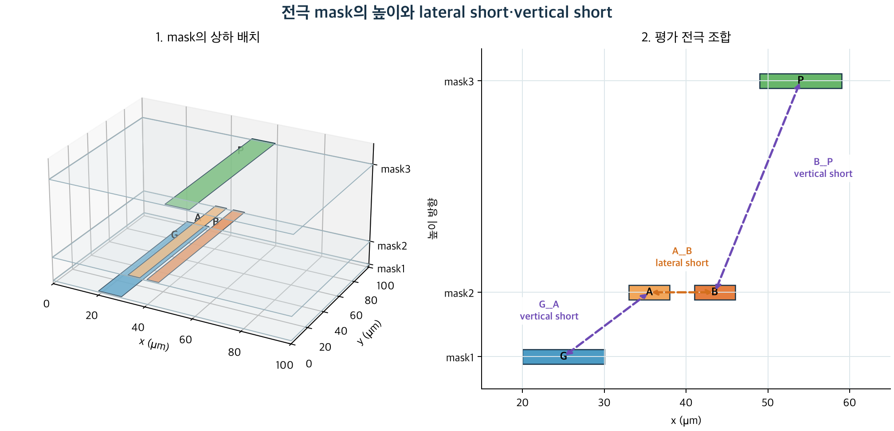
| 입력 | 쉽게 읽는 의미 | 주요 출력 |
|---|---|---|
| 제품 manifest + 이진 mask | 좌표·축척, 적층, 전극 ID·net, 이물 유입 공정 | 검증된 계산 형상 |
| 이물 크기 + 평가 전극 조합 | 어떤 크기의 이물이 어느 전극 사이를 연결하는지 | 조합별 hotspot·CA |
| mask별 산포 YAML | 실측 overlay x/y와 CD 분포 | 조건부 확률 지도·평균 CA |
| Fab 이물 표 | layer·크기별 평균 개수와 검사면적 | layer·전극 조합별 가중 위험 |
| contact·via mask | 위·아래 전극을 잇는 hole의 위치 | open 자동 단자, CNO hotspot·CA |
모든 유형은 같은 방식으로 답한다. 이물 중심이 이 위치에 오면 해당 불량이 생기는가? 그렇다면 그 위치가 hotspot이고, hotspot 면적이 Critical Area(CA)다.
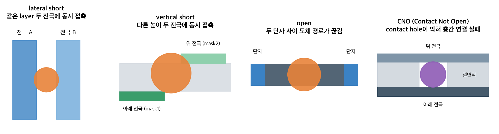
| 유형 | 판정 조건 | 필요한 입력 | 불량 단위 ID |
|---|---|---|---|
| lateral short | 같은 layer의 다른 net 전극 두 개에 이물이 동시에 닿음 | 전극 mask, 전극 조합 | 전극 조합 ID |
| vertical short | 다른 layer 전극 두 개에 xy·높이 차를 합친 대각 거리로 동시에 닿음 | 전극 mask, 적층 두께·순서 | 전극 조합 ID |
| open | 이물이 도체를 가려 원래 이어져 있던 단자 사이 경로가 끊김 | 단자 영역 mask 또는 contact·ROI 경계 자동 단자 | open 경로 ID, auto_open:전극 |
| CNO | 이물이 contact·via hole의 접촉 영역을 전부 덮어 층간 연결이 안 됨 | contact mask, hole layer, 적용 공정 | cno:contact:아래__위 |
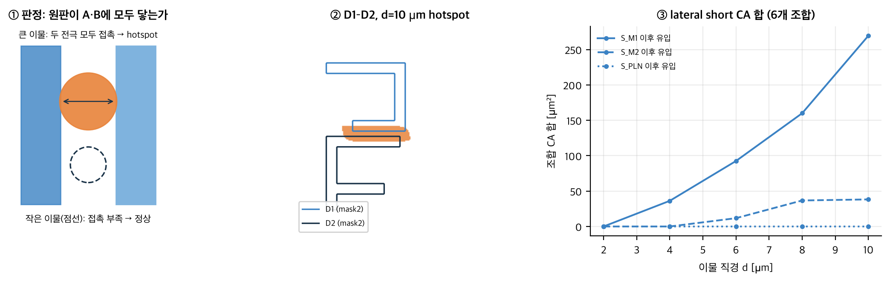
| 항목 | 결과 · 해석 |
|---|---|
| 파일럿 조합 | 6개 조합 × 이물 유입 공정 3 × 직경 5 = 90 조건 |
| 크기 단조성 | 직경이 커질수록 hotspot이 넓어지고 위반은 0건 |
| 공정 의존 | mask1 형성 후 유입이 가장 크고, 평탄화막 형성 후 유입은 0 µm² |
| 통합 비중 | union any를 1/k 배분한 CA의 3.48% (Fab 가중 전) |
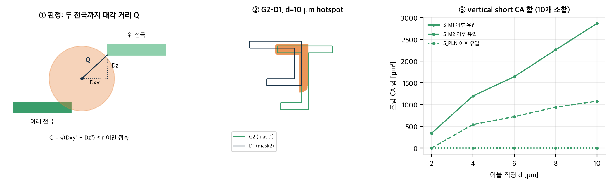
| 항목 | 결과 · 해석 |
|---|---|
| 개선 핵심 | 기존 계산이 따로 보던 xy 거리와 높이 차를 하나의 대각 거리로 결합 |
| 파일럿 조합 | 10개 조합 × 3 × 5 = 150 조건, 먼 거리 음성 대조 G1–D4·G3–D3은 0 px |
| 공정 의존 | mask1 형성 후 유입이 가장 크고, 평탄화막 형성 후 유입은 모든 직경에서 0 µm² |
| 통합 비중 | union any 배분 CA의 61.26%로 가장 큼 (Fab 가중 전) |
open은 배선끼리 닿는 불량이 아니라 도체가 끊기는 불량이다. 먼저 이물이 없을 때 단자들이 어떻게 이어져 있는지 확인하고, 이물을 놓은 뒤 그 연결이 깨지는지 본다.
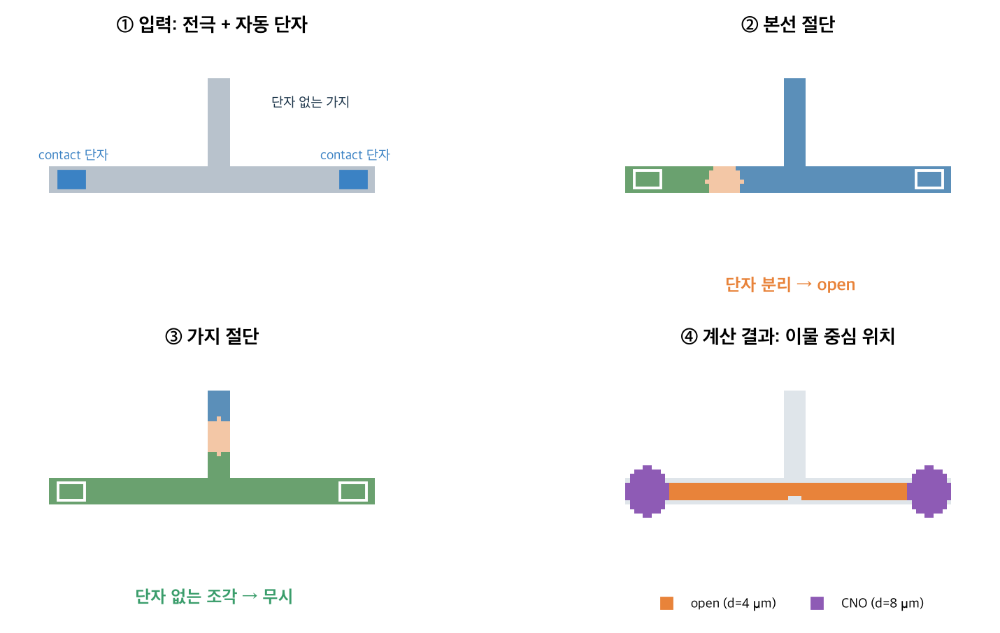
| 단자 지정 방식 | 단자 | 용도 |
|---|---|---|
| contact 자동 단자 (신규) | 전극에 닿은 contact·via hole, ROI 경계에 닿은 구간 | 실제 제품 기본. 사용자 단자 지정 불필요 |
| 단자 영역 mask | 사용자가 그린 두 영역 | 특정 경로 지정, 기존 결과와 비교 |
| 두 점 좌표 · ROI proxy | 1픽셀 점, 전극 양 끝 | 합성 시험·이전 입력 호환 |
| 판정 규칙 | 처리 |
|---|---|
| 이물 없이도 끊긴 경로·전극에 닿지 않는 단자 | 명목 입력은 오류, 산포 조건은 baseline_open·terminal_lost로 제외 |
| contact 단자가 이물에 완전히 덮임 | open이 아니라 CNO로 계산 |
| ROI 경계 구간이 완전히 덮임 | ROI 밖으로 이어진 배선이 끊긴 것으로 보고 open |
| 단자가 2개 미만인 전극 | insufficient_terminals로 기록하고 계산하지 않음 |
복합 200² 파일럿의 G1·D1·D2 단자 영역 자리에 같은 net의 pad 전극과 contact hole을 넣었다. 사용자가 단자를 지정한 결과와 contact에서 자동으로 단자를 만든 결과를 전 픽셀에서 비교했다.
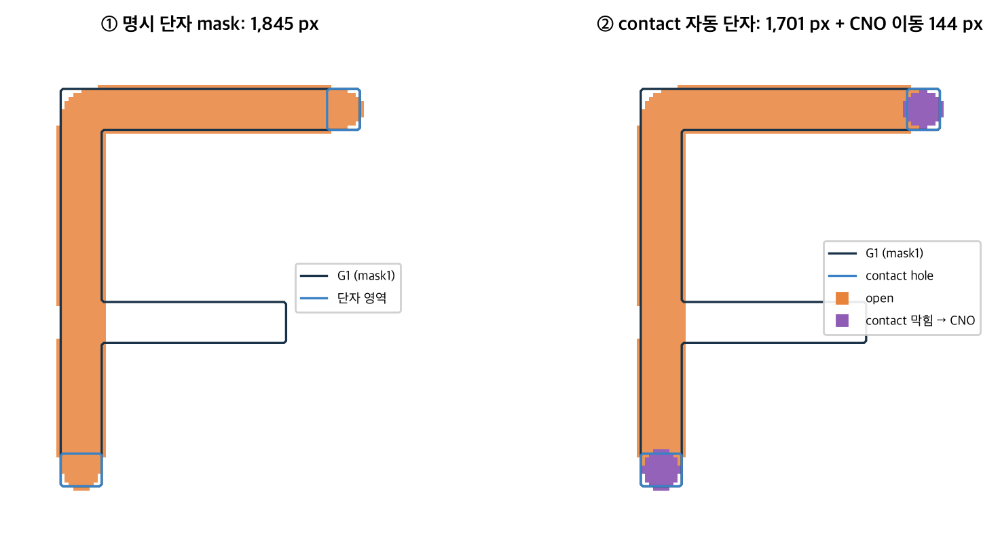
| 경로 | 명시 단자 open | 자동 단자 open | 자동에만 있음 | 명시에만 있음 | CNO 밖 차이 |
|---|---|---|---|---|---|
| G1_OPEN | 10,824 | 10,272 | 0 | 552 | 0 |
| D1_OPEN | 7,616 | 7,248 | 0 | 368 | 0 |
| D2_OPEN | 7,132 | 6,764 | 0 | 368 | 0 |
CNO(Contact Not Open)는 위·아래 전극을 잇는 contact·via hole이 이물로 막혀 층간 연결이 되지 않는 불량이다. 실제 접촉 영역은 hole ∩ 아래 전극 ∩ 위 전극이다.
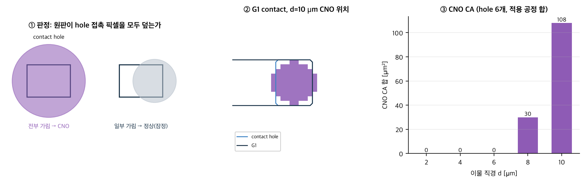
| 항목 | 현재 처리 |
|---|---|
| 판정 (잠정) | 이물 원판이 hole의 실제 접촉 픽셀을 전부 덮으면 CNO |
| 병렬 hole (잠정) | 같은 두 전극을 잇는 hole 중 하나라도 막히면 CNO |
| 입력 검증 | hole마다 아래·위 전극이 각각 정확히 1개이고 같은 net이어야 함 |
| 적용 공정 | contact별로 명시. 산포로 hole이 전극과 떨어지면 contact_lost로 제외 |
| 위험도 배분 | CNO 기여도는 위·아래 전극에 절반씩 배분, risk_by_contact 출력 |
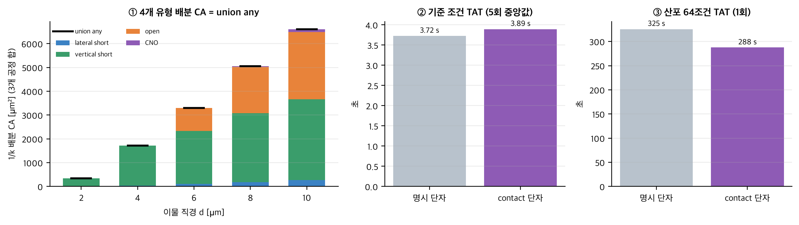
| 실행 (복합 200², contact 파일럿) | 명시 단자 | contact 자동 단자 |
|---|---|---|
| 기준 조건 TAT · 5회 중앙값 | 3.724 s | 3.889 s |
| 기준 조건 최대 RSS | 224.8 MB | 243.5 MB |
| 산포 64조건 TAT · 1회 | 325.3 s | 287.8 s |
| 산포 64조건 최대 RSS | 330.3 MB | 377.5 MB |
| 산포 평균 CA · open / CNO | 6,431.9 / — µm² | 6,088.4 / 177.3 µm² |
| 산포 제외 조건 · 소실 hole | 0 · 0 | 0 · 0 |
첫 실제 적용에서는 Fab 실측값이 있는 mask별 overlay x·y와 CD만 산포로 사용한다. CD와 overlay는 서로 독립이며 overlay x·y도 독립으로 처리한다. 근거가 없는 두께·이물 크기·중심 이동 산포는 0으로 고정한다.
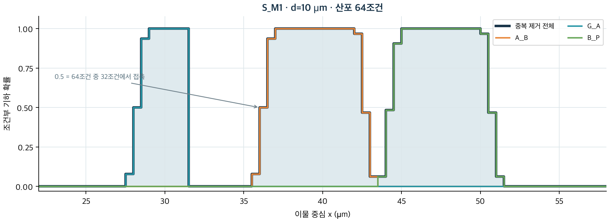
Sobol은 0~1 누적확률 공간을 고르게 채운 뒤 각 값을 지정 분포의 역누적분포로 변환한다. 정규분포를 지정하면 최종 overlay·CD 변화량은 정규분포를 근사한다. Sobol 자체가 균일하다는 이유로 실제 변화량이 균일분포가 되는 것은 아니다.
Fab 자료는 layer별·이물 크기별 평균 이물 개수와 sample당 검사면적이다. 평균 개수를 검사면적으로 나누어 평균 밀도를 만든 뒤, 같은 layer와 크기의 CA에 적용한다.
| 관점 | 계산 | 답하는 질문 |
|---|---|---|
| layer별 | 해당 유입 공정의 모든 hotspot을 OR한 union CA × 밀도 | 어느 Fab layer의 전체 위험이 큰가? |
| 전극 조합별 | pair CA × 밀도, 중복 배분 기여도 병행 | 어느 전극 조합이 민감하고 주요한가? |
| layer × 전극 | Fab layer × 이물 크기 × 실제 pair ID | 어느 공정 이물이 어느 전극 불량에 크게 연결되는가? |
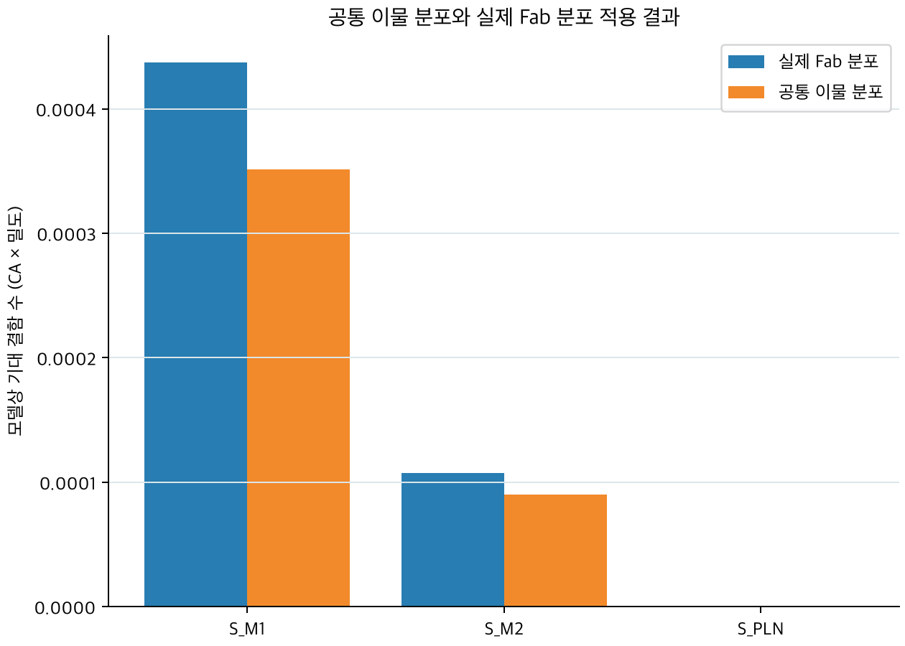
raw pair risk는 조합 자체의 민감도다. 한 위치에서 k개 조합이 동시에 hotspot이면 배분 기여도는 각 조합에 1/k씩 나눈다. 배분 기여도 합은 layer union과 일치한다.
이 배분은 물리적 원인을 확정하는 식이 아니라 중복 없이 설명하기 위한 보고 규칙이다.
| 검증 항목 | 확인 결과 | 남은 범위 |
|---|---|---|
| 산포 0 → 기준 조건 | 불량 단위·union hotspot과 CA 일치 | 실제 제품 입력 |
| 같은 seed·설정 | 확률·union 배열 재현, 여러 seed 기록 | 실제 Fab 값 수렴 |
| open | 단자 영역·적용 공정과 전수 대조 0 px | 실제 단자 mask·대형 ROI |
| 크기 단조성 | 2→4→6→8→10 µm 위반 없음 | 비원형 이물 |
| 대각 위치 이동 | 상부 전극 이동 방향으로 hotspot 이동 | 기존 sim 실측 대조 |
| 중복 제거 | OR·동시 단위 수와 1/k 배분 합계 일치 | 실제 제품 위험 순위 |
| 자동 단자 open·CNO | 명시 단자와 동등(CNO 이동만 차이), CNO 전수 대조 일치 | CNO 가림 기준 확정 |
| 기준 단선·단자 소실 | 후보 전체를 open으로 세지 않고 분류 | 실제 산포 조건 빈도 |
합성 결과는 계산 규칙과 다중 전극 처리의 기능 근거다. 실제 제품의 유효성이나 기존 현장 sim 대체 가능성을 증명하지는 않는다. 다음 검증부터 공통 pair와 신규 대각 pair를 구분해 비교한다.
legacy_failure는 다르다. 내부 값은 xy kernel 참고 결과이며 기존 sim 대체 판정에 직접 사용하지 않는다.| 이물 유입 시점 | A–B lateral | G–A vertical | B–P vertical | 전체 union |
|---|---|---|---|---|
| mask1 형성 후 | 700 | 350 | 700 | 1,750 µm² |
| mask2 형성 후 | 100 | 0 | 400 | 500 µm² |
| 평탄화막 형성 후 | 0 | 0 | 0 | 0 µm² |
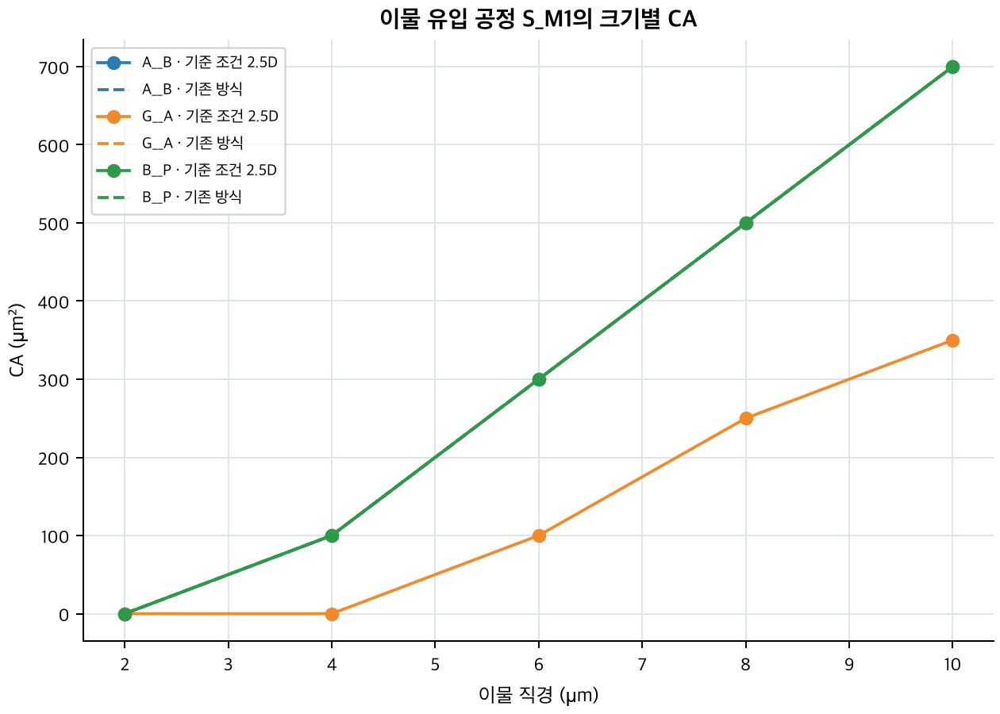
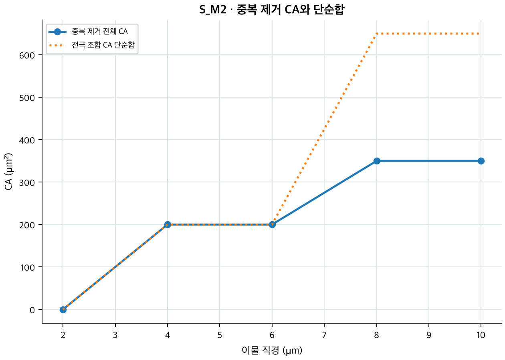
| 겹침 예시 | union CA | pair CA 단순합 | 해석 |
|---|---|---|---|
| mask2 형성 후 / 10 µm | 350 µm² | 650 µm² | 여러 조합이 같은 위치를 공유 |
| mask2 형성 후 / 6 µm | 200 µm² | 200 µm² | 겹침이 없으면 두 값이 같음 |
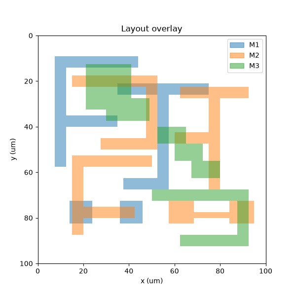
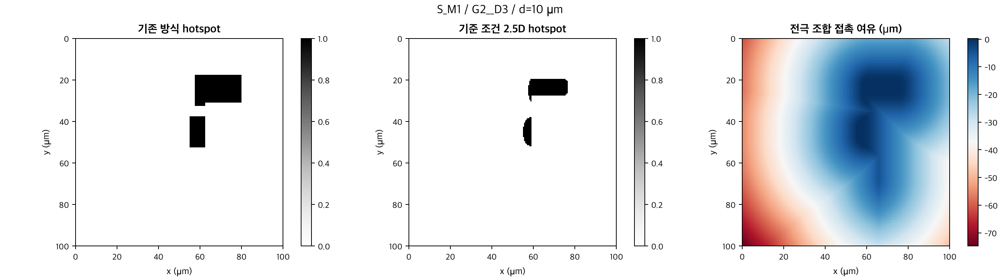
| 입력 항목 | 2차 시험 |
|---|---|
| 격자 | 200×200 px, 0.5 µm/px, ROI 100×100 µm |
| 전극 | 10개 — mask1 3, mask2 4, mask3 3 |
| 전극 조합 | 16개 — lateral short 6, vertical short 10 |
| 형상 | L·T 분기, 좁은 간격, 분리된 섬, 정렬·부분 중첩·대각 교차 |
| 조건 | 이물 유입 공정 3 × 직경 5개, open·산포 제외 |
| 검사 | 결과 |
|---|---|
| 지정 vertical short 양성 | 8개 조합 모두 hotspot 존재 |
| 먼 거리 음성 대조 | G1–D4, G3–D3 모두 0 px |
| 크기 단조성 / union 일치 | 위반 0 / OR 불일치 0 |
| 최대 동시 영향 조합 | 4 |
| 내부 kernel 차이 | 2,911 px, 미분류 0 |
동일 장비에서 각 조건을 1회 워밍업 후 5회 실행했다. 시간은 wall time 중앙값, 메모리는 5회 중 최대 RSS다. 이물 유입 공정 3개·직경 5개·open 제외 조건으로 비교했다.
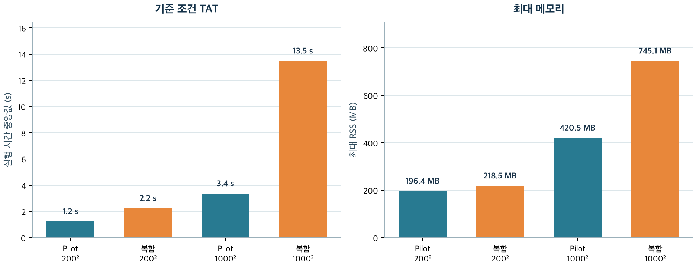
| 입력 | 전극 / 조합 | TAT | 최대 RSS | 출력 |
|---|---|---|---|---|
| pilot 200² | 4 / 3 | 1.24 s | 196.4 MB | 0.08 MB |
| 복합 200² | 10 / 16 | 2.24 s | 218.5 MB | 14.00 MB |
| pilot 1000² | 4 / 3 | 3.36 s | 420.5 MB | 0.95 MB |
| 복합 1000² | 10 / 16 | 13.48 s | 745.1 MB | 65.16 MB |
복합 1000²는 pilot 1000²보다 TAT 약 4.01배, 최대 RSS 약 1.77배다. 출력 크기는 전극 조합 수와 Zarr 압축률의 영향을 함께 받는다.
장비는 Mac mini M4 Pro, CPU 12코어, 메모리 48 GB다. 아래 값은 단일 대형 합성 입력의 실측이며 실제 제품 최대치가 아니다.
| 실행 조건 | TAT | 최대 RSS | 해석 |
|---|---|---|---|
| 1000×1000, 직경 32개, 공정 3, pair 3 기준 short · open 제외 | 16.07 s | 533.6 MB | 크기 수 증가 기준선 |
| 1000×1000, 직경 5개, 64 산포 조건 short · open 제외 | 102.25 s | 1072.4 MB | 64조건 전체 반복 |
| 같은 산포 입력 · P0 메모리 보완 후 | 107.32 s | 636.8 MB | TAT 약 +5%, RSS 약 −41% |
| 실행 | 활성 조건 | TAT 최초→최종 | 최종 TAT 비율 | 통합 CA 비율 |
|---|---|---|---|---|
| lateral short | 90 | 1.44→1.45 s | 22.81% | 3.48% |
| vertical short | 150 | 1.79→1.76 s | 27.76% | 61.26% |
| open | 35 | 16.52→3.14 s | 49.43% | 35.27% |
| 통합 | 275 | 17.86→4.42 s | 4.04배 향상 | 100.00% |
동일 형상 padded 1000²: lateral 5.68초 · vertical 8.52초 · open 4.67초 · 통합 16.39초 / 최대 RSS 843.6MB / 출력 621.4MB. 같은 국부 형상을 큰 빈 ROI 중앙에 둔 확장성 시험이며 실제 긴 배선 대표값은 아니다. 출력 대부분은 pair_margin_um이다.
계약 검증만으로 기하 계산의 정확성을 보장할 수 없다. 작은 합성 반례에서 모든 픽셀을 직접 대조하고, 발견한 오류를 회귀 테스트로 고정했다.
| 대표 결함 | 발생 가능한 오판 | 현재 조치 |
|---|---|---|
| 중심 offset x/y 뒤바뀜 | 비등방 격자에서 다른 방향으로 hotspot 이동 | 축 순서 수정·회귀 테스트 |
| ㄱ자 open 후보 누락 | 실제로 단절되는 위치를 정상으로 누락 | 모서리 후보 보완·전수 비교 |
| 비등방 CD 반픽셀 | x/y 물리 길이가 다른 경계를 같은 길이로 보정 | 축별 픽셀 길이 적용 |
| Fab bin 행 순서 | 같은 크기가 다른 밀도 구간에 연결 | 정렬·반개구간 규칙 고정 |
| union 수렴 누락 | pair 수렴만으로 전체 위험 수렴 오인 | union 계열 수렴 기록 추가 |
| 보완 | 확인 결과 |
|---|---|
| layer mask 부분집합 | 전극 밖 TR 영역 허용·면적 기록, layer 밖 전극은 오류 |
| open 단자 영역 | 점 좌표 호환, 영역 mask 연결성과 적용 공정 검증 |
| 배분 기여도 | 비중첩·완전 중첩·부분 중첩에서 합계가 union과 일치 |
| 산포 union 열 | 기준 CA와 산포 평균·분위수를 다른 열에 보존 |
| 결함 | 수정 |
|---|---|
| 이미 끊긴 경로에서 후보 전체가 open | 이물 없는 상태의 연결 검사, baseline_open 분류 |
| 산포로 단자가 사라지면 후보 전체가 open | terminal_lost·contact_lost 분류와 실행 기록 |
| 기존 sim 비교에 제품·mask 식별 없음 | 비교 계약 2.0: product·설계 버전·mask hash 일치 필수 |
| 비교 실패 시 출력 폴더 잔류 | 모든 배열 검증 후 출력 생성 |
| 수렴 지표가 초기 변화·inf를 다르게 반영 | seed별 마지막 비교의 최댓값, inf 보존 |
현재 저장소에는 pyproject.toml과 uv.lock이 있다. 폐쇄망 반입은 대상 OS·CPU·Python용 패키지 묶음과 빈 환경 재설치 시험이 추가로 필요하다.
| 반입 항목 | 현재 확인 | 필요 조치 |
|---|---|---|
| Python | 3.12.13 실행 근거 | 대상 환경 버전 고정 |
| 의존성 | uv.lock 존재 | 대상 플랫폼 wheelhouse 준비 |
| 신규 설치 | 미측정 | 빈 환경 설치 시간·로그·hash 보존 |
| 회귀 테스트 | 304개 통과 | 실제 비교 adapter 추가 시 재실행 |
| 실행 추적 | 입력·출력 hash, git commit/dirty, build ID 기록 | clean commit 실행 보존 |
python3.12 -m venv .venv .venv/bin/python -m pip install --no-index --find-links wheelhouse -r requirements.lock.txt export PYTHONPATH=src PYTHONDONTWRITEBYTECODE=1 .venv/bin/python -m pytest -q .venv/bin/python -m particle_sim validate-input --product-config product.yaml
최종 비교 manifest에는 기존 sim과 particle-sim의 버전, 입력·출력 hash와 좌표 변환 규칙을 함께 기록한다.
| 순서 | 작업 | 완료 기준 |
|---|---|---|
| 1 · 완료 | 입력·출력 계약 보완 | TR 잔여 영역, 조합 감사, open 단자, 산포/union, Fab 연결 |
| 2 · 완료 | 회귀 검증·비교 엔진 | schema·commit·출력 hash, compare-sim round-trip |
| 2a · 완료 | 검토 결함·자동 단자 open·CNO | 결함 8건 수정, contact 파일럿 동등성, 304개 테스트 |
| 3 · 다음 | 기존 sim 실제 대조 | 공통 조합 hotspot·XOR·CA 차이 분류, 신규 대각 조합은 N/A |
| 4 · P1 | 실제품 기준·산포 pilot | mask별 실측 overlay·CD, 64→128→256 수렴과 여러 seed |
| 5 · P1 | Fab 자료 사후 적용 | 평균 개수/검사면적을 layer·크기별 CA에 연결 |
| 6 · P1 | particle-sim-compare | layer·전극·교차 위험 순위와 수기 계산 일치 |
docs/CODE-IMPLEMENTATION-PLAN.md에 기록했다.아래는 필드 의미를 보여주는 발췌이며 실행 가능한 전체 YAML은 아니다. 입력 shape는 고정되지 않으며 모든 mask의 크기와 좌표계가 같으면 1000×1000 이상도 사용할 수 있다.
coordinate_system: pixel_size_x_um: 0.5 pixel_size_y_um: 0.5 roi_width_um: 100.0 roi_height_um: 100.0 particle_sizes_um: [2, 4, 6, 8, 10] embedding_depth_um: 0.0 contact_margin_um: 0.0
particle_source_steps: - step_id: after_mask1 lands_after_layer: mask1 fab_distribution_layer: fab_mask1 contacts: - contact_id: CNT_GI path: masks/contact_GI.png hole_layer: insulator1 applicable_particle_source_steps: - after_mask1 open_applicable_steps_by_layer: mask1: [] mask2: [after_mask2]
| 입력 묶음 | 담는 내용 | 검증 관계 |
|---|---|---|
| 제품 manifest + mask | 좌표·적층·전극·net·평가 조합 | 전극은 layer mask의 부분집합, 같은 layer 전극끼리 비중첩 |
| 산포 YAML | mask별 overlay x/y·CD 분포와 근거 | 첫 실제 계산은 실측값만, 변수들은 독립 |
| Fab 이물 표 | layer·크기 bin별 평균 개수·검사면적·기간 | 시뮬레이션 후 평균 밀도로 변환 |
| open 단자 | 시작·도착 단자 영역 mask | 비어 있지 않고 배선 내부이며 서로 분리, 이물 없이 연결 |
| contacts | contact·via mask, hole layer, CNO 적용 공정 | hole마다 아래·위 전극 1개씩, 같은 net |
mask1·mask2는 전극이 놓인 물리 layer이고, after_mask1은 이물이 들어온 시점이며, fab_mask1은 Fab 이물 자료가 측정된 공정 이름이다. 세 값을 같은 문자열이라고 가정하지 않는다.
조건별 2차원 hotspot 지도를 여러 장 쌓아 둔 형식이다. 큰 지도를 chunk로 나누므로 필요한 공정·크기·전극 조합과 위치만 읽는다.
질문: 어디가 위험하며 여러 조합이 어디서 겹치는가?
행과 열이 있는 압축 표다. Fab layer, 이물 크기, 전극 ID, CA와 단위를 정렬·필터·집계한다. 사람이 볼 상위 순위는 CSV로도 만든다.
질문: 어느 조건·layer·전극의 값이 큰가?
| 최종 출력 | 핵심 내용 | 용도 |
|---|---|---|
| hotspots.zarr / probability.zarr | pair·union의 위치별 0/1 또는 조건부 비율 | 공간 근거 확인 |
| ca.parquet / ca_union.parquet | pair CA와 중복 제거 union CA | 기하 결과·수렴 확인 |
| risk_by_layer.parquet | Fab layer별 union CA × 이물 밀도 | layer 위험 순위 |
| risk_by_pair.parquet | Fab layer × 실제 전극 pair, raw·배분·고유 기여 | 전극 조합·교차 위험 순위 |
| risk_by_open_path.parquet | open 경로·자동 단자 전극별 raw·배분·고유 기여 | 주요 open 경로 |
| risk_by_contact.parquet | CNO contact 연결별 기여, 위·아래 전극 | 막히기 쉬운 contact |
| risk_by_electrode.parquet | 개별 전극 관여 점수와 합계 일치 기여 | 반복 등장하는 주요 전극 |
| risk_summary.csv | layer·조합·open·전극 상위 항목 | 사람이 바로 여는 검토표 |
| run/risk manifest | 입력·코드·schema·출력 hash와 가정 | 실행 재현 |
현재 ca.parquet에는 실제 전극 ID가 있어 pair 분석의 기반은 있다. 다만 particle-sim-compare 내보내기는 역할·layer 중심이고, 실측 평균 이물 개수 가중과 산포 probability 내보내기가 아직 완성되지 않았다. 연동 시 실제 전극 ID·pair ID·Fab layer·배분 기여도를 구조화된 필드로 추가한다.
아래 항목은 계산은 동작하지만 물리적 의미를 아직 합의하지 않은 규칙이다. 실행 결과 manifest와 경고에 잠정 기준임을 기록하고 있으며, 확정되면 규칙과 회귀 테스트를 함께 바꾼다.
| 항목 | 현재 (잠정) | 결정할 것 | 필요한 근거 |
|---|---|---|---|
| CNO 가림 범위 | hole 접촉 영역을 전부 가려야 CNO | 일부만 가려도 불량인지, 임계 가림 비율 | 접촉저항 측정, CNO FA 사례 |
| 병렬 contact hole | 같은 두 전극을 잇는 hole 중 하나라도 막히면 CNO | 모든 hole이 막혀야 불량인지 | 설계상 hole 이중화 의도 |
| net 단위 open | 전극 하나 단위로 판정 | 같은 net의 다른 layer 우회 경로를 반영할지 | net 연결 그래프, contact 전수 입력 |
| 전류 방향·심각도 | 연결 관계만 사용 | 구동단·부하를 구분해 신호를 잃는 쪽을 볼지 | 화소 회로·netlist |
| 적용 이물 유입 공정 | open은 layer별, CNO는 contact별 명시 | 적층 순서로 규칙화할 수 있는지 | 공정별 이물 영향 근거 |
| 픽셀 연결 기준 | 4-연결(대각만 닿으면 끊김) | 대각 접촉을 연결로 볼지 | mask 해상도 대비 최소 선폭 |
| contact margin | 0 µm | 재질별 전기 접촉 거리 | 전도성·비전도성 이물 실험 |
현재 TR은 layer mask에서 전극에 할당되지 않은 영역으로 픽셀 수와 면적만 기록한다. 반도체 분야의 Inductive Fault Analysis(IFA)는 이물 통계로 물리 결함을 만들고, 트랜지스터 수준 결함(bridge, cut, gate-oxide short)으로 바꾼 뒤 결함 유형별 critical area로 순위를 매긴다. 이 흐름을 현재 엔진에 맞춰 세 단계로 확장한다.
tr_hit)| TR 결함 (2단계) | 기하 조건 | 재사용 엔진 | 전기적 의미 |
|---|---|---|---|
| S–D short (항상 켜짐) | 도전성 이물이 채널을 가로질러 S·D에 동시 접촉 | lateral short (S–D 조합) | 신호 분리 기능 상실 |
| gate short | 이물이 게이트 절연막을 관통해 G와 S/D 또는 채널에 접촉 | vertical short | 게이트 누설 또는 short |
| 채널 open (항상 꺼짐) | 채널이 S 접점과 D 접점 사이에서 끊김 | open (채널=전극, S·D 접점=단자) | 구동 불가 |
| 질문 | 영향 |
|---|---|
| TR 종류와 구조 (LTPS/Oxide, top/bottom gate) | vertical 판정의 높이 순서 |
| 채널(active) mask와 S/D 접점 위치를 제공할 수 있는가 | 1·2단계 입력 가능 여부 |
tr_hit을 union any와 분리 보고할지 | 기존 결과의 의미 유지 |
| 결함별 kill ratio를 보정할 불량 좌표·FA 자료가 있는가 | 기하 피격 → 예상 불량 변환 |
| 분야 | 항목 | 현재 상태 | 결정 · 확인할 것 |
|---|---|---|---|
| 물리 | 이물 재질 | 재질 구분 없음 | 도전성·비도전성별 short·open·CNO 성립 조건 |
| 물리 | 비원형 이물 | 원형/구형 | 타원·섬유·불규칙 형상과 방향각 분포 |
| 물리 | 예상 불량 변환 | 기하 위험까지만 계산 | 노출 면적·기간, 이물 독립성, Poisson 가정의 제품 대조 |
| Fab | 크기 분포 | 대표 직경 1:1 연결 | 크기 간 상관, 원본 표본의 경험분포 적분 |
| 성능 | 산포 open 계산 | 64조건 200²에서 약 5분, 조건 간 재사용 없음 | bounded 또는 disk cache 도입 |
| 성능 | 대형 ROI | 전체 이미지 계산 | tile+halo 분할(open은 전역 연결성 대책 필요) |
| 저장 | pair_margin_um | padded 1000²에서 출력 621.4MB 중 621.3MB | 항상 저장·선택 출력·정밀도·압축 |
| 연동 | particle-sim-compare | export는 역할·layer 중심 | 전극 ID·CNO·배분 기여도와 Fab 공정 계약 |
| 운영 | 폐쇄망 반입 | uv.lock 존재 | 대상 플랫폼 wheelhouse와 빈 환경 재설치 시험 |
실제 데이터 시험(기존 sim 동일 입력 비교 → 실제 제품 기준·산포 → Fab 적용)은 위 항목과 별개로 바로 진행할 수 있다. 다만 CNO 가림 기준과 net 단위 open은 실제 contact 입력으로 결과가 얼마나 달라지는지 확인한 뒤 확정하는 것이 효율적이다.